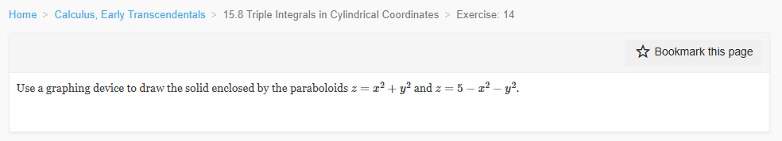
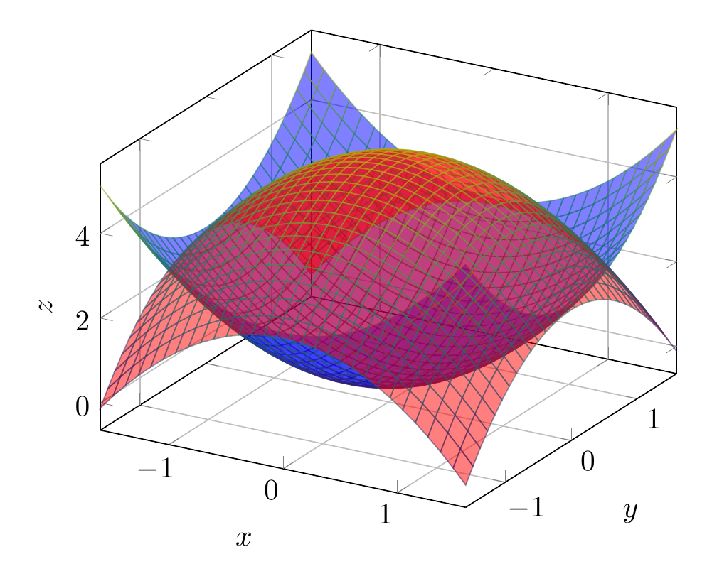

Please solve the problem in the following image.
(Image `20260928_154641_649424_utc_0800_0.png`. Alt text: Image: human_20260928_154641_649424_utc_0800)

20260928_154641_649424_utc_0800_0.png
End of problem
Answer
# Problem Statement
The goal is to draw (visualize) the solid enclosed by the two paraboloids:
1. $z = x^2 + y^2$
2. $z = 5 - x^2 - y^2$
## 1. Analytical Identification
### Equations and Nature of Surfaces
* **Surface 1:** $z = x^2 + y^2$.
This is a circular paraboloid opening upwards with its vertex at the origin $(0, 0, 0)$.
* **Surface 2:** $z = 5 - (x^2 + y^2)$.
This is a circular paraboloid opening downwards with its vertex at $(0, 0, 5)$.
### Finding the Intersection
The two surfaces intersect when their $z$-values are equal:
$$x^2 + y^2 = 5 - (x^2 + y^2)$$
Adding $x^2 + y^2$ to both sides:
$$2(x^2 + y^2) = 5$$
$$x^2 + y^2 = \frac{5}{2}$$
In cylindrical coordinates $(r, \theta, z)$, where $r^2 = x^2 + y^2$, the intersection occurs at:
$$r^2 = \frac{5}{2} \implies r = \sqrt{\frac{5}{2}} \approx 1.58$$
The intersection is a circle in the plane $z = \frac{5}{2} = 2.5$ with radius $r = \sqrt{2.5}$.
### Region of the Solid
The solid is bounded below by $z = x^2 + y^2$ and above by $z = 5 - x^2 - y^2$. The projection of the solid onto the $xy$-plane is the disk $x^2 + y^2 \le \frac{5}{2}$.
In cylindrical coordinates, the solid $E$ can be described as:
$$E = \{ (r, \theta, z) \mid 0 \le \theta \le 2\pi, \, 0 \le r \le \sqrt{5/2}, \, r^2 \le z \le 5 - r^2 \}$$
## 2. Visualization
The following plots represent the two paraboloids and the solid they enclose.
---
\documentclass[border=10pt]{standalone}
\usepackage{pgfplots}
\usepgfplotslibrary{colormaps}
\pgfplotsset{trig format plots=rad}
\begin{document}
\begin{tikzpicture}
\begin{axis}[
view={30}{30},
xlabel={$x$},
ylabel={$y$},
zlabel={$z$},
colormap/viridis,
grid=major,
domain=-2:2,
y domain=-2:2,
samples=30,
clip=false
]
% Surface 1: z = x^2 + y^2
\addplot3[surf, opacity=0.5, blue, domain=-1.6:1.6, y domain=-1.6:1.6] {x^2 + y^2};
% Surface 2: z = 5 - x^2 - y^2
% Note: The domain for Z2 should be restricted to the intersection for a cleaner look,
% but standard surface plots show the whole function.
% However, to show the "enclosed" part, we should ideally restrict the domain.
% The intersection is r^2 = 2.5, so r ~ 1.58.
\addplot3[surf, opacity=0.5, red, domain=-1.6:1.6, y domain=-1.6:1.6] {5 - x^2 - y^2};
\end{axis}
\end{tikzpicture}
\end{document}

pgfplots_0.png
---
### Summary of Findings
- **Intersection:** A circle with radius $\sqrt{5/2}$ at height $z = 2.5$.
- **Shape:** A lens-like or "capsule" shape formed by the meeting of two opposing paraboloids.
- **Bounds:** $x^2 + y^2 \le 2.5$ and $x^2+y^2 \le z \le 5-(x^2+y^2)$.
$\boxed{\text{The solid is bounded by the surfaces } z=x^2+y^2 \text{ and } z=5-x^2-y^2, \text{ intersecting at the circle } x^2+y^2 = 2.5.}}$